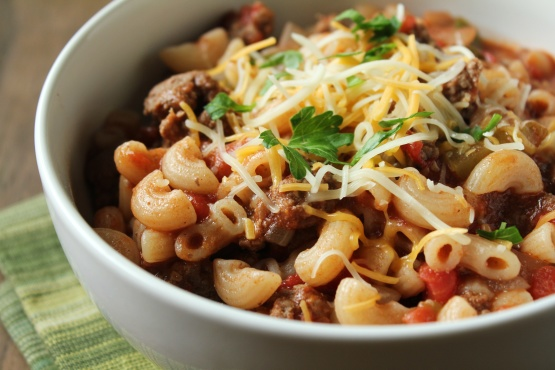
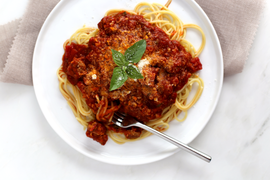

Curtis' Top Three Favorite Recipes
American Goulash
8-10 servings, 10 mins prep, 20 min cook time
- 1 lb ground beef
- 1 large onion, chopped
- 1 large green pepper, chopped
- 1 tablespoon garlic salt
- 1 teaspoon pepper
- 28 ounces diced tomatoes
- 15 ounces tomato sauce
- 1 lb elbow macaroni or 1 lb medium pasta shell
- 1 cup cheddar cheese or 1 cup monterey jack cheese, shredded
Chinese Pork Dumplings
5 servings, 20 mins prep, 60 mins cook time
- 1/2 cup soy sauce
- 1 tablespoon seasoned rice vinegar
- 1 tablespoon finely chopped Chinese chives
- 1 tablespoon sesame seeds
- 1 teaspoon chile-garlic sauce (such as Sriracha®)
- 1 pound ground pork 3 cloves garlic, minced
- 1 egg, beaten
- 2 tablespoons finely chopped Chinese chives
- 2 tablespoons soy sauce
- 1 1/2 tablespoons sesame oil
- 1 tablespoon minced fresh ginger
- 50 dumpling wrappers
- 1 cup vegetable oil for frying
- 1 quart water, or more as needed
Jo Mama's World Famous Spaghetti
10-14 servings, 20 mins prep, 60 min cook time
- 2 lbs Italian sausage, casings removed (mild or hot)
- 1 small onion, chopped (optional)
- 3 -4 garlic cloves, minced
- 1 (28 ounce) can diced tomatoes
- 2 (6 ounce) cans tomato paste
- 2 (15 ounce) cans tomato sauce
- 2 cups water (for a long period of simmering for flavors to meld. If you don't want to simmer it as long, add less)
- 3 teaspoons basil
- 2 teaspoons dried parsley flakes
- 1 1⁄2 teaspoons brown sugar
- 1 teaspoon salt
- 1⁄4-1⁄2 teaspoon crushed red pepper flakes
- 1⁄4 teaspoon fresh coarse ground black pepper
- 1⁄4 cup red wine (a good Cabernet!)
- 1 lb thin spaghetti
- parmesan cheese